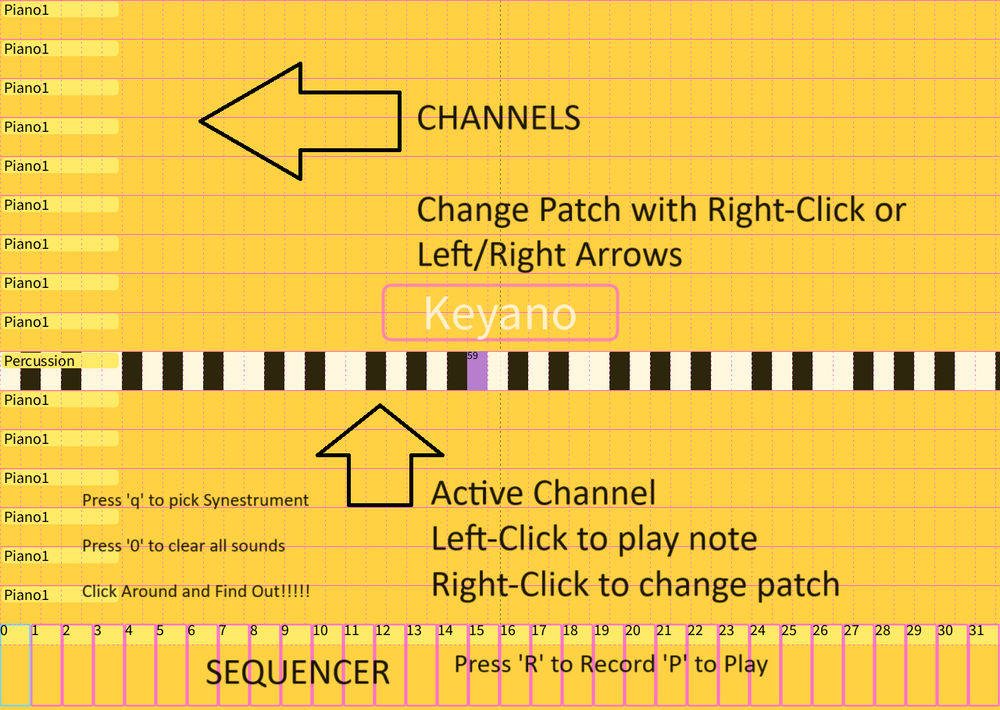
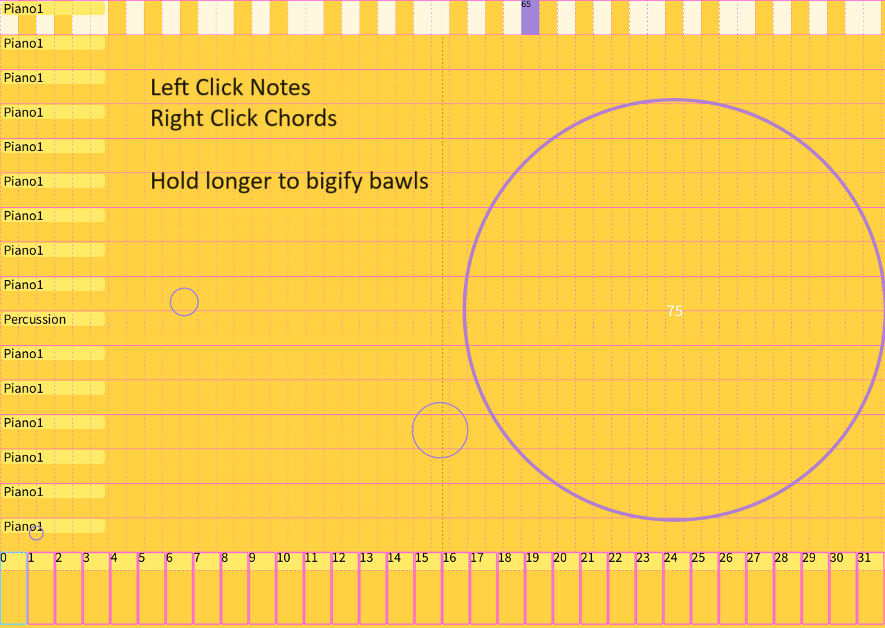

SynestR is a software sequencer and instrument framework written in Processing. It is not a sketch that plays a sample when you click. It is a 16-channel MIDI performance environment: a Gervill General MIDI synthesizer, a looping 4-track / 32-step sequencer, live note recording with program-change and note-off events, and a plugin architecture for building new “synestruments” without touching the engine.
The brief was to make an audiovisual instrument whose audio and visual modalities are equally expressive — easy to learn, inexhaustible in play. The reference point was Brian Eno and Peter Chilvers’ Bloom: tap, and a circle grows while a tone evolves. SynestR takes that coupling seriously and then goes further. Every gesture writes MIDI. Every MIDI event draws. Hold duration becomes note length. Drag speed becomes velocity. A bouncing ball is a generative phrase generator. A row of stained-glass pixels is an FFT that you can play.
Create an open-ended system where the audio and visual modalities are equally expressive. Its results should be inexhaustible, deeply variable, and dependent on the performer's choices.
- Engine
- Java Sound API + Gervill
- Voices
- 16 channels × 128 GM patches
- Sequencer
- 4 tracks × 32 steps, looping
- Timing
- PPQ MIDI, live BPM
- I/O
- Soft synth, MIDI out, serial
- Range
- MIDI 36–84 · Ch. 9 percussion
MIDI engine
Playback is the JDK’s Gervill software synthesizer, addressed through javax.sound.midi. Each channel holds a patch index and display name; channel 9 is locked to the General MIDI percussion kit. Left/right arrows (or a right-click sweep across the 128-instrument map) send bank-select CC and a program-change, then preview middle C so you hear the new voice immediately.
Notes fire on two paths at once: Synthesizer.getChannels()[ch].noteOn for local Gervill audio, and Receiver.send(ShortMessage) for whatever MIDI device is selected — Gervill, loopMIDI, or hardware like a Novation Circuit Tracks. That dual send means a synestrument can be a soft instrument or a controller for a hardware rack without changing a line of performance code.
Visual notes are MIDI objects. Pitch maps to color across the 36–84 range. Remaining duration maps to radius and opacity, so a held note blooms like Bloom and collapses on note-off. Hovering a circle shows velocity. Panic (0) all-notes-off clears sounding voices and the draw list together.
4 × 32 sequencer
The transport is a real Java Sequencer, not a millis() loop pretending to be one. A Sequence is created at PPQ resolution 4 with four tracks padded to 32 ticks so the loop length is stable. Play sets LOOP_CONTINUOUSLY. Mouse wheel sets BPM via setTempoFactor(bpm / 120). Up/down arrows select the record track. Clicking the strip sets the write head.
Record (R) is live capture, not step-grid painting. On note-off, the engine writes three events onto the current track at the current tick: a program-change (so the loop recalls the patch you were on), a note-on with velocity, and a note-off at tick + duration. If the sequencer is running, duration is the tick delta from mouse-down — wrapping correctly if the playhead crosses the loop. If it is stopped, hold time is converted through milliseconds-per-tick and clamped to the remaining steps. The strip draws occupied steps in pitch-mapped color and a live playhead; a red LED sits on the armed track while recording. Clear (C) deletes every track and rebuilds an empty 32-step sequence.
{kind=link}

Synestrument framework
The interesting part is not the five included instruments. It is that they all subclass Synestrument. The base class owns bounds, name, getNote / getChannel mapping, and empty mouse/key hooks. A new instrument is a tab: override display() and the gestures, add it to the syns list, cycle with Q. Recording, patch changes, serial pitch-bend, and the note bloom layer stay in the engine. That is how Keyano, a bezier guitar, a circle-of-fifths wheel, a physics drone, and an image FFT can share one sequencer.


{kind=link}



Serial and hardware
The sketch opens a serial port and parses live commands. BEND maps a 0–1023 sensor into pitch-bend around the MIDI center of 8192, then writes it to the active synestrument’s channel (resetting the previous channel so bends do not stick). Control-change stubs are ready for knobs. That path is how physical experiments — including my BounceHouse MicroPython / Pico work — hook into the same sequencer the mouse is using.
Keys
- Q Cycle synestruments
- K Jump to Keyano
- R Arm / disarm record
- P Play / stop loop
- C Clear sequence
- 0 All notes off
- ← → Patch · step while recording
- ↑ ↓ Sequencer track
- Wheel BPM
- B Pitch-bend mode
- 1 FekCOF chord / note
- Enter Save frame
{kind=link}
{kind=link}
{kind=link}